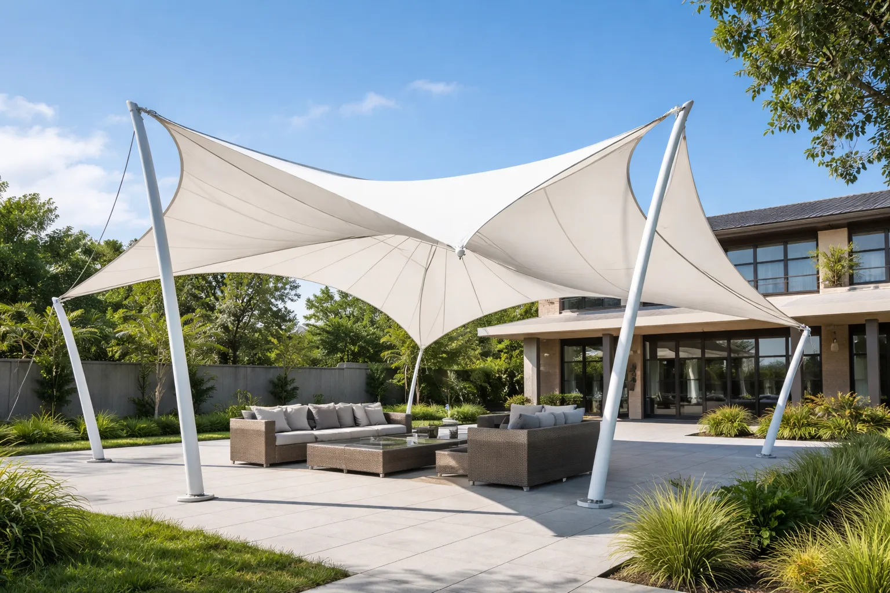

Dipercaya Sejak 1999 Hasil Lebih Rapih, Kuat & Aestetic

RIZKI ABADI CANOPY menghadirkan solusi kanopi modern dengan struktur kokoh, desain elegan, serta material berkualitas tinggi untuk memberikan perlindungan maksimal sekaligus meningkatkan nilai estetika bangunan.
Didukung tenaga profesional dan pengalaman di bidangnya, kami memastikan setiap pemasangan dilakukan secara rapi, kuat, dan tahan lama untuk kebutuhan hunian maupun area komersial.
-
check_circle
Struktur Kokoh & Tahan Lama
-
check_circle
Material berkualitas premium
-
check_circle
Tim Berpengalaman & Terpercaya
-
check_circle
Harga Bersahabat, Fleksibel & Transparant
Garansi perlindungan terhadap kebocoran dan perubahan warna untuk memastikan kanopi tetap kuat dan tahan lama.
Hasil Pekerjaan Kami
Kumpulan proyek kanopi membrane yang telah kami kerjakan dengan standar kualitas tinggi, menampilkan detail struktur, kerapihan finishing, serta desain yang menyatu dengan bangunan. Setiap proyek menjadi bukti komitmen kami dalam menghadirkan hasil yang kuat, presisi, dan estetis.

Rooftop Area Ruko

Area Lapangan Sekolah

Carport Rumah

Area Parkir

Penutupdan pelindung Pintu

Teras Rumah

Area Balkon / Teras Lantai 2